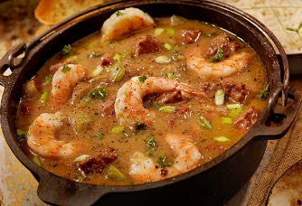

New Orleans Gumbo

Description
If you like Cajun food, it doesn't get more authentic than a big bowl of gumbo made with a dark roux. Talk about
comfort food!
Ingredients
- 1 cup all purpose flour
- 2/3 cup vegetable oil
- 1 bunch celery, diced, leaves and all
- 1 green bell pepper diced
- 1 large yellow onion diced
- 1 bunch green onion, finely chopped
- 1 bunch fresh, finely chopped parsley
- 2-3 cloves garlic
- 1-2 tbspn cajun seasoning
- 6-8 cups chicken broth
- 12oz package of Andouille sausages, sliced into coins
- Meat from 1 Rotisserie Chicken
- 2 cups shrimp, pre-cooked
- Cooked white rice for serving
- 1 1/2 tablespoons Cajun seasoning, or to taste
Steps
- Make the roux
- Brown the sausage.
- Cook the vegetables in the broth
- Add the remaining 5 1/2 cups of broth. Add veggies, parsley, garlic and roux to the pot. Stir well.
- Bring to a boil over medium heat for 5-7m, or until veggies are slightly tender, skim off fat, stir in seasoning.
- Add meat.
- Taste and serve when ready.